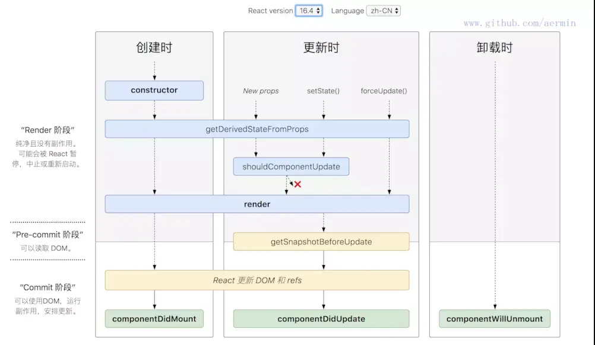
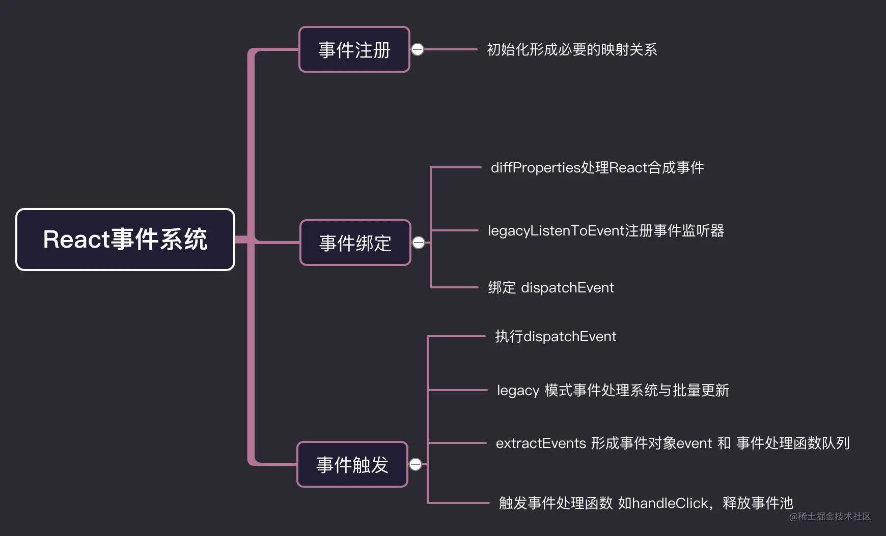
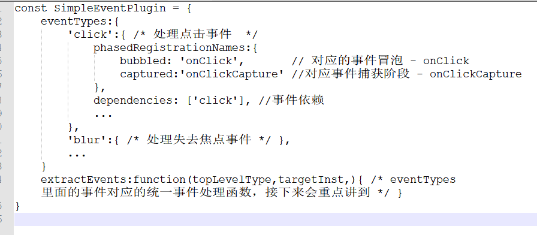

知识点
优化
- immutable
- shouldComponetUpdate
组件通信
- 父子组件通信（props）
- 兄弟组件通信（通过父组件进行状态管理，A调用父组件修改，父组件通知B）
- 跨多层级组件通信（ Context API）
- 任意组件（Redux/Event Bus）
Virtual DOM
判断差异
- 首先从上到下，从左往右遍历对象，就是DOM多叉树的深度遍历，这一步会给每个节点添加索引，便于最后渲染差异
- 一旦节点有子元素，就判断子元素是否有不同
优势
- 将 Virtual DOM 作为一个兼容层，让我们还能对接非 Web 端的系统，实现跨端开发。
- 通过 Virtual DOM 我们可以渲染到其他的平台，比如实现 SSR、同构渲染等等。
- 实现组件的高度抽象化
路由原理
两种模式
Hash 模式
- 当#号后面的哈希值发生变化，可以通过hashChange监听URL的变化
History 模式
- HTML5推出的新功能，主要使用 history.pushState 和 history.replaceState 改变 URL
- 点击后退按钮时触发popState事件
两种模式对比
- Hash模式只能更改#后面的内容，History模式可以通过API设置任意同源的URL
- History 模式可以通过 API 添加任意类型的数据到历史记录中，Hash 模式只能更改哈希值，也就是字符串
- Hash 模式无需后端配置，并且兼容性好。History 模式在用户手动输入地址或者刷新页面的时候会发起 URL 请求，后端需要配置 index.html 页面用于匹配不到静态资源的时候
Vue与React之间的区别
- Vue支持v-model，v-mode是语法糖跟React写表单的方式区别不大
- 修改数据方式不同，Vue直接赋值，React用setState修改状态。Vue底层用了依赖追踪，页面渲染已经使最优的，React还需要用户手动去优化
- React需要使用JSX，有一定上手成本，并且需要整套工具链支持；Vue使用模板语法，没JSX灵活，但可以摆脱工具链，通过直接编写render函数就可以在游览器运行
- Vue定位就是降低前端开发的门槛，React更多的是去改变用户接受它的概念和思想，相比Vue上手成本略高
- 生态上，React用户比Vue多
React事件机制
合成事件概念
React中，我们绑定的onClick，onChange等事件，并不是原生的事件，而是由原生事件合成的React事件，比如：click事件合成为onClick事件，blur、change、focus、input、keydown等合成onChange事件
优势
- 跨游览器兼容
- 统一管理，React可以在组件卸载时，移除其上的绑定事件，优化内存
React事件系统
事件注册
1、namesToPlugins
- 事件名称与事件模块插件的映射
2、plugins
- namesToPlugins 注册的所有插件列表
3、registrationNameModules
- React合成事件与React处理事件插件 映射关系
4、registrationNameDependencies
- React合成事件与原声事件 映射关系
事件绑定
1、diffProperties 处理React合成事件 HostComponent=5（dom元素）类型的fiber
2、legacyListenToEvent 注册事件监听器
- 找到React合成事件对应的原生事件集合
- legacyTrapBubbledEvent 绑定真正的dom事件
3、绑定dispatchEvent，进行事件监听
- 调用addTrappedEventListener进行真正的事件绑定，绑定在document上，dispatchEvent为统一的事件执行函数
事件触发
1、执行dispathEvent函数
2、legacy 事件处理系统与批量更新
- React在初始化dom时，用随机的key internalInstanceKey 指向了当前dom的fiber对象，fiber对象用stateNode指向当前的dmo元素
3、执行插件的extractEvents 形成事件对象event和事件处理函数队列
4、触发事件处理函数，释放事件池
试题
什么是 Virtual DOM？为什么 Virtual DOM 比原生 DOM 快？
1、JS对象来模拟DOM
2、分场景，
- 如果无脑替换所有DOM节点这种场景，Virtual DOM 的局部更新占优。
- 如果局部替换DOM，那Virtual DOM 没有直接操作DOM快，毕竟还有一层算法损耗
前端路由原理？两种实现方式有什么区别？
1、通过监听URL的变化，然后匹配路由规则，显示相应的界面，并且无须刷新界面。
2、参考知识点
示例图
React生命周期

React事件机制

- 事件插件结构/SimpleEventPlugin

扩展
Reselect
https://www.jianshu.com/p/6e38c66366cd